| 1. 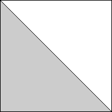 | 2. 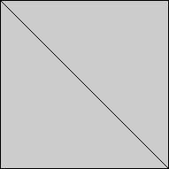 | 3. 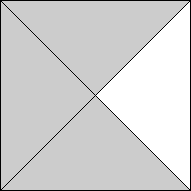 | ||
| s = 1 Trivial. | s = 1 Trivial. | s = √2 = 1.414+ Trivial. |
| 4. | 5. 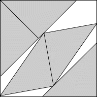 | 6. 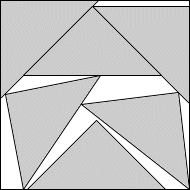 | ||
| s = √2 = 1.414+ Trivial. | s = 1.788+ Found by Maurizio Morandi in August 2007. | s = 1.937+ Found by Maurizio Morandi in February 2008. |
| 7. 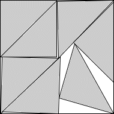 | 8. 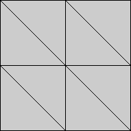 | 9. 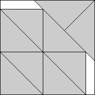 | ||
| s = 1.999+ Found by Maurizio Morandi in August 2007. | s = 2 Trivial. | s = 3/2 + 1/√2 = 2.207+ Found by Erich Friedman in March 2005. |
| 10. 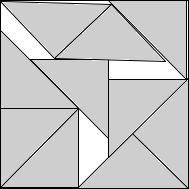 | 11. 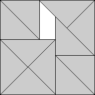 | 12. 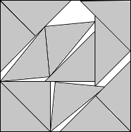 | ||
| s = 2.393+ Found by Maurizio Morandi in January 2008. | s = 1 + √2 = 2.414+ Found by Maurizio Morandi in August 2007. | s = 2.612+ Found by Maurizio Morandi in January 2008. |
| 13. 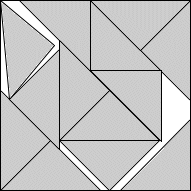 | 14. 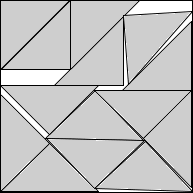 | 15. 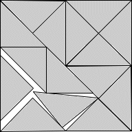 | ||
| s = 2.688+ Found by Maurizio Morandi in March 2008. | s = 2.767+ Found by Maurizio Morandi in October 2007. | s = 2.828+ Found by Maurizio Morandi in August 2007. |
| 16. | 17. 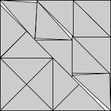 | 18. 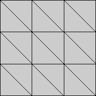 | ||
| s = 2√2 = 2.828+ Trivial. | s = 2.970+ Found by David W. Cantrell in August 2007. | s = 3 Trivial. |
| 19. 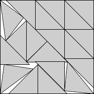 | 20. 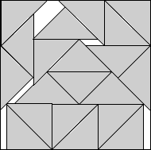 | 21.
| ||
| s = 3.201+ Found by Maurizio Morandi in February 2008. | s = 2 + 9√2/10 = 3.272+ Found by Maurizio Morandi in February 2008. | s = 3.340+ Found by Maurizio Morandi in March 2008. |
| 22. 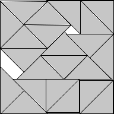 | 23. 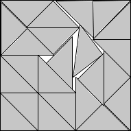 | 24. 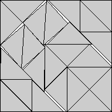 | ||
| s = 3.392+ Found by Maurizio Morandi in December 2007. | s = 3.464+ Found by Maurizio Morandi in December 2007. | s = 3.517+ Found by David W. Cantrell in August 2007. |